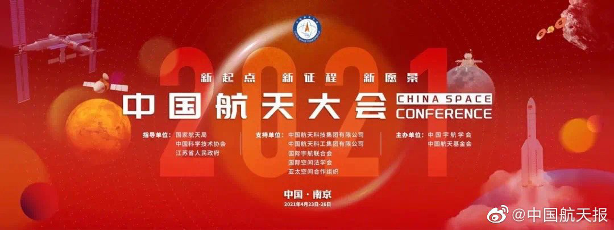

China has started the demonstration work of the marginal exploration project of the solar system, which includes four scientific objectives

China has started the demonstration work of the marginal exploration project of the solar system, carried out relevant studies on the dynamic evolution of the solar wind and its interaction with the interstellar medium, the evolution of the solar system and the distribution characteristics of celestial bodies in the outer solar system, so as to perceive the deep space environment of the Earth home and reveal the typical celestial bodies in the outer solar system.
According to the plan, the marginal exploration project of the solar system will achieve four scientific goals: exploration of no man's land, complete view of the heliosphere, a glimpse of the big planets, and archaeology of the solar system. Among them, the feature of planetary space weather will be explained in detail. "To conduct in-depth analysis of the scientific background, key scientific issues and exploration scientific objectives of the marginal exploration of the solar system, aiming to reveal major scientific issues such as heliospheric physics, solar system evolution and interstellar physics." In addition, Wang suggested that the Chinese Academy of Sciences collect research projects from the public every two years. If the projects are mature, affordable and technically feasible, the academy can support pilot research, hoping that more researchers and space enthusiasts can participate in the project and pool their efforts to explore the unknown universe.
At this year's China Aerospace Congress, the Chinese Society of Astronautics released the following scientific and technical problems in the field of aerospace in 2021: The sun's magnetic field periodic reverse global magnetic field detection with the sun, galaxy feedback effect of the ecological environment and the problem of "missing baryons" in situ, the use of space resources to achieve long-term survival, human space must have absolute zero ultra-low temperature management technology, design of reusable liquid rocket engine technology, based on the fusion propulsion system of spacecraft design technology, large airspace across high speed domain Aerodynamic layout design method and technology of ultra-aircraft, inner-external coupling acoustic vibration environment assessment and prediction technology of air-breathing high-speed aircraft, satellite-earth all-day safe communication technology of geosynchronous orbit, high-voltage high-power generation and power management technology of space.